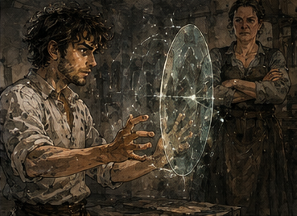
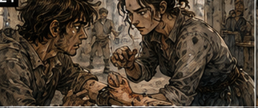
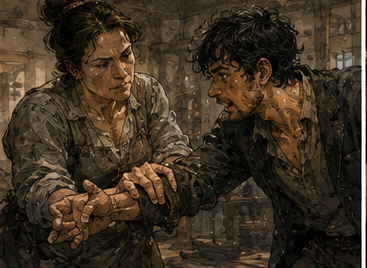

The first Barrier I cast in my second life was approximately the size of a dinner plate. It lasted less than a second. It gave me a headache. Hessa stared at the empty air where it had been. I stared too. Then I laughed.

"Again," I said.
"No," Hessa said.
"That was a Barrier."
"Yes."
"A real Barrier."
"Yes."
"I cast magic."
"You did."
"Again."
"No." I turned toward her. "You cannot possibly expect me to stop there."
"I expected you to stop before there."
"That seems pessimistic."
Hessa stepped between me and the center of the practice room. She was not large, but she had developed a particular way of standing that implied I would have to physically move her if I wanted to continue, and neither of us believed that would end well for me.
"Sit down," Hessa said.
"I am not tired."
"Your left eye is twitching." I blinked. The left eye twitched.
"Unrelated."
"Sit."
Reasonable. I sat. The room was small enough that my knees nearly touched the chalk circle she had drawn on the floor. Hessa's practice space occupied the back half of a building shared with a laundress, which meant every magical breakthrough in my new life smelled faintly of soap and wet linen. There were worse smells associated with magic. Much worse.
I had once spent four days maintaining defensive wards around a corpse-eater nest in midsummer. No amount of rank protected a man from discovering that prestige and smell were unrelated systems. I smiled. Hessa said, "What?"
"Nothing."
"You are doing it again."
"Doing what?"
"Leaving." I looked at her. She tapped two fingers against her temple. "You go somewhere. Then you come back smiling like someone told a joke."
"Sometimes they did."
"Who?"
"Usually me." Hessa stared. I wiped sweat from my forehead. "How bad?"
"The Barrier?"
"My channels."
"Not damaged."
"Excellent."
"Because I stopped you."
"Still excellent."
"Your definition of success is exhausting."
"My definition of success is success."
Hessa crouched and pressed two fingers against the inside of my wrist. Her eyes unfocused slightly as she felt for the weak mana response there. I had once known healers who could diagnose channel damage through a gauntlet in the middle of combat. Hessa needed skin contact, quiet, and time. That did not make her bad. That made her what almost everyone actually was.

Useful reminder. I had spent too long surrounded by monsters and then mistaken them for the normal distribution.
"Again," I said. Hessa did not release my wrist. "No."

"Tomorrow?"
"Maybe."
"That's Antonius's word."
"It is a good word."
"Everyone is conspiring."
"Against what?"
"Momentum." She laughed. I disliked how often people laughed when I used that word. Hessa sat opposite me. "Tell me what you did."
"Cast Barrier."
"I know."
"Then we're done."
"Greg."
Fine.
I closed my eyes and reconstructed it. Not the spell as old Greg knew it. That would be useless. Old Greg's Barrier was a city viewed from a mountain: obvious streets, familiar districts, entire structures compressed into a shape the mind could hold without noticing every brick. Young Greg had three bricks and enthusiasm.
"I gathered through the channel," I said. "Held at the wrist, moved toward the palm, shaped a plane, gave it boundary, released." Hessa frowned. "You skipped compression."
"No."
"You did."
"I didn't need it."
"Every Barrier needs compression."
"Every useful Barrier."
Her face changed. There. This was the problem. Not Hessa being wrong. Hessa teaching the spell correctly. The standard beginner Barrier gathered mana, compressed it enough to stabilize, shaped a broad plane, then anchored the plane to the caster's intent. Sensible. Reliable. Wasteful. Wasteful was acceptable when the student had enough mana to waste. I did not.
"The plane was barely stable," Hessa said.
"Correct."
"It would stop nothing."
"Probably a moth."
"A determined moth would win."
"Then an indecisive moth."
"Greg."
"It existed."
"For less than a second."
"Yes."
"And you nearly emptied yourself."
"Also yes."
"Why are you happy?"
I opened my eyes. Because I knew what came after. Not tomorrow. Not even soon. But Barrier was no longer theoretical. For weeks my old magic had been a memory stored in a body that could not speak the language. Today the body had produced one syllable. Badly. Quietly. But mine.
"Because now I can make it cheaper," I said.
Hessa's expression suggested this was not the answer she wanted.
"Stronger," she said.
"Later."
"Stable."
"Eventually."
"Bigger."
"Why?" She blinked.
"Because it is a Barrier."
"That's not a reason."
"It blocks things."
"Sometimes."
"That is the purpose."
"That's one purpose." Hessa stared at me for several seconds. Then she stood. "Go home."
"You're ending early."
"Yes."
"Because I asked what Barrier is for?"
"Because I know what happens if I let you stay."
"What?"
"You'll spend an hour trying to make a worse spell on purpose."
I smiled. Hessa pointed at the door. "Exactly." I went home. I did not practice. That statement was technically true if one defined practice as casting magic. I practiced everything immediately adjacent to casting magic. Breathing. Channel awareness. Hand position. Intent shaping without mana. Visualizing boundaries. Reducing the imagined plane. Making it larger.
Making it smaller. Tilting it. Rotating it. Moving the anchor point from palm to fingertip, then realizing I was importing habits from a body with channels I did not possess and starting again. At some point I found myself standing in the middle of my room with one finger extended toward a cup. The cup had done nothing. I had done nothing. We were locked in a contest of tremendous strategic importance.
"What am I doing?" I asked aloud.
The cup declined to answer. Current board. Mana: terrible. Barrier: exists. Debt: still irritating. Pell: has the Tere gauge. Six silver: still needed if I wanted to buy two days of Pell's time without borrowing. Sword: neglected yesterday. Antonius: likely to find me if I tried to hide. Dungeon salvager: leaving today, location unknown, absolutely none of my business.
I looked at the cup. Barrier. One spell. One terrible little spell. What was the strongest version of me available right now? Not mage. Not yet. Student. Annoying. I went to sleep. The next morning Antonius sent Rusk before breakfast. Rusk knocked twice, opened the door without waiting, and looked at me sitting on the floor.
"What are you doing?"
"Meditating."
"You don't meditate."
"Mana."
"You look constipated."
"That's because you interrupted at a delicate moment." Rusk held up a folded paper.
"Work." I took it. The paper contained an address and two words.
PICK UP.
"Pick up what?" Rusk shrugged.
"From whom?"
"Address."
"What's there?"
"Find out."
"Antonius has become lazy."
"Antonius is busy."
"Difference?" Rusk turned toward the stairs.
"Wait." He stopped. I held up one finger.
"Yesterday I cast Barrier." Rusk looked at the finger. Then at me.
"Congratulations."
"That response was inadequate."
"Did it work?"
"Yes."
"What did it block?" I paused. Rusk smiled.
"Fuck you."
He left. The address belonged to a glass merchant named Vennel, who had apparently defaulted on a short-term note and agreed to surrender three crates of imported alchemical glass as partial payment. This sounded interesting. It was not. The crates were heavy. That was the entire problem Antonius had assigned me. A cart waited outside. Vennel's assistant pointed toward the back.
"Those." I inspected them.
"Any reactive residue?"
The assistant frowned. "They're empty."
"That wasn't the question."
"They're new."
"Any treated surfaces?"
"No."
"Mana-active packing?"
"No."
"Fragile?" He stared at me.
"Glass."
"Useful."
The crates had been packed well. Straw. Dividers. Reinforced corners. No mystery. No hidden future technology. No famous maker. No cursed vial. Just glass. I moved them. This was harder than it should have been because my shoulders were still sore from sword work and because imported alchemical glass was apparently manufactured from condensed resentment. Halfway through the second crate, I thought about using Barrier.
Not to lift. I could not. Not enough force. But the crate wanted to slide when I tipped it onto the cart. A tiny plane beneath one corner could help.
No.
Hessa had said tomorrow maybe. Today was tomorrow. Technically. I put the crate down. The assistant said, "Problem?"
"No." I looked at the cart. Barrier. Small. Momentary. Could brace the lower edge while I changed grip. Useful? Barely. Necessary?
No.
Which made it perfect for testing. No danger except breaking expensive glass and having Antonius murder me.
Excellent.
I gathered. The mana came slower standing than sitting. Interesting. I had expected that. Probably. My pulse rose anyway. Thread to wrist. Palm. Too much. Reduce. The instinct to shape the whole plane arrived automatically. I cut it down. Not dinner plate. Hand-sized. Smaller. Three fingers across. A translucent distortion appeared against the cart bed. Not light.
Barrier had never really glowed unless someone made it glow. Beginners imagined magic should announce itself. Mostly it looked like air remembering it could become solid. The crate corner touched it. The Barrier vanished. The crate dropped perhaps half an inch. I caught it. Pain flashed through my wrist. The assistant shouted. I shoved the crate safely onto the cart.
Then leaned against it, breathing hard. The assistant stared.
"What was that?"
"Magic."
"I know that."
"Then we're both doing well."
"You almost dropped the crate."
"I didn't."
"You did."
"Almost is an important word."
The Barrier had held. For maybe a quarter second. Against perhaps twenty pounds of the crate's shifting weight. Better than the moth. Much better. Also stupid. Hessa was going to know. I did not know how, but competent instructors developed supernatural awareness specifically for student stupidity. I finished the pickup without magic. At Antonius's warehouse, Rusk watched me unload.
"Why are you favoring your right hand?"
"I'm not."
"You are."
"Observation is a disease."
"Did you do magic with the boxes?" I stopped.
"How could you possibly know that?" Rusk smiled.
"You told me you cast Barrier, then I sent you to move something heavy. You're Greg."
That was offensive. Also fair.
"One test."
"Did it help?"
"Yes."
"Did it hurt?"
"Unrelated."
Rusk laughed and took one end of the crate. We carried it inside. Antonius was arguing with a merchant about lamp oil. I waited. Six days ago, I would have inserted myself because lamp oil prices connected to shipping, storage, winter demand, alchemical solvent use, and probably three future fortunes if I thought hard enough.
Today I had a more important problem. How small could Barrier become before it stopped being Barrier? I was halfway through imagining a plane the size of a coin when Antonius said, "Greg." I looked up. The merchant was gone.
"Yes?"
"Did you hear any of that?"
"Some."
"How much?"
"Oil." Antonius looked at Rusk. Rusk said, "Magic." Antonius looked back at me.
"You did magic?"
"Barrier."
That got a better reaction than Rusk's. Antonius's eyebrows rose. "Actually?"
"Yes."
"Useful?"
"Not yet."
"Then why are you smiling?"
"Potential." Antonius sighed.
"Don't borrow against it."
"I wasn't going to."
"You thought about it."
"I think about many things."
"That's the problem." He handed me another paper. I looked at it.
"What's this?"
"Payment."
Six silver. I looked up.
"For?"
"The gauntlet appraisal."
"No." Antonius leaned back.
"No?"
"You already own my labor."
"Not all of it."
"Apparently enough to send me after glass."
"That was labor. Yesterday was not." I stared at the coins. Six silver. Exactly six. Pell. Two days. Antonius knew. Of course he knew.
"Why six?"
"That's what you said Pell's time cost."
"You were listening."
"I usually am."
"That's unsettling."
"Take it." I did not. This felt like a trap. Not criminal trap. Antonius trap. Worse.
"What are the terms?"
"None."
"That's impossible."
"Payment."
"For an appraisal I was already doing because you told me to?"
"Yes."
"You are trying to teach me something."
Antonius's face went blank.
"No."
"That's exactly what you'd say."
"I'm paying you for work I asked you to do outside the labor attached to your debt." I considered. Simple. Suspiciously simple.
"You want me to give it to Pell."
"I don't care."
Lie. Maybe. Not enough information. I took the six silver.
"Thank you." Antonius blinked. Rusk looked over. I frowned. "What?"
"Nothing," Antonius said.
"You both reacted."
"You said thank you."
"I say thank you." Rusk shook his head.
"Fuck both of you."
Normal restored. I went to Pell's workshop with the money. He refused it. I put the coins on his bench. He put them back in my hand.
"I said two days of time, not that I was selling them to you."
"That's what time means."
"No."
"You're an artisan."
"Yes."
"Your time has a price."
"Yes."
"Six silver."
"No."
"Then how much?" Pell glared. I smiled. He had walked into that.
"Not the point," Pell said.
"What is the point?"
"The gauge is yours."
"Yes."
"If I spend two days learning from it, I get something."
"Correct."
"So why are you paying me?"
"Because you would otherwise spend those two days earning money."
"And you get?"
"A better Pell."
Silence. I heard it after I said it. That sounded terrible. Pell's expression agreed.
"I mean your work."
"Worse."
"Your regulators."
"Keep going."
"I am going to stop."
"Growth." I sat on the edge of his worktable. Pell immediately shoved me off.
"Chair." I took the chair.
"The gauge has value in your hands," I said. "Not mine. If you can learn from it, we both learn whether the thing I bought is actually worth anything. You lose two days. I cover two days."
"You don't know what I earn in two days."
"Approximately six silver."
"You guessed."
"You didn't deny it."
"I was trying to get you out."
"Still data." Pell looked at the coins. Then at me.
"Where did you get them?"
"Antonius."
"No."
"Payment."
"Loan?"
"No."
"Greg."
"I did work."
"What work?"
"Appraisal." Pell stared.
"The gauntlet?"
"Yes."
"You were there because Antonius told you to be."
"Apparently my debt labor has boundaries."
"Does Antonius know that?"
"He invented them." Pell picked up one coin. Turned it over.
"One day."
"Two."
"One."
"Why?"
"Because I have an order due."
"Delay it."
"No."
"Why?"
"Because somebody paid me."
There it was. Pell had his own constraints. Annoying.
"One day," I said. "Then?"
"Then I decide whether a second is worth it."
Reasonable.
"Fine." He took three silver. Pushed three back. I looked at them.
"Keep it."
"No."
"Advance."
"No."
"Materials."
"No."
"Food."
"Get out." I took the coins.
"Tomorrow?"
"Tomorrow."
Good.
I left. Then went to Hessa. She knew. Of course. I had barely entered before she said, "What did you do?"
"Good afternoon."
"What did you do?"
"Work."
"With mana."
"Minimal."
Her eyes dropped to my right hand. There was no mark. Still she knew.
"Show me." I held it out. She pressed the wrist. Waited. Her mouth tightened.
"Idiot."
"That's not diagnostic language."
"You strained the channel."
"Strained is not damaged."
"That is how damaged begins."
"I used less mana than yesterday."
"Against resistance."
Ah.
Right.
I had reduced the Barrier size but given it a job. Different load. I knew that. Old Greg knew that. Present Greg had apparently decided smaller meant cheaper in all dimensions. It did not.
"Interesting," I said. Hessa slapped my hand.
"Ow."
"Good."
"Violence against students is frowned upon."
"Leave."
"No." She stared. I sat on the mat.
"I'm not casting."
"Correct."
"Teach me why the load moved into the channel."
That changed her expression. Not enough to forgive me. Enough to keep me. She sat. For the next half hour, Hessa made me describe exactly what I had done. The Barrier had been smaller, yes. The shape cost less. But I had anchored it directly through the palm while asking it to resist a moving physical load. The spell collapsed quickly enough that I avoided worse strain, but the force had nowhere elegant to go.
Old Greg would have distributed it. Through what? Channels I did not have. Reinforcement I could not cast. Anchors I could not form. Again: city from mountain. Three bricks.
"Then don't anchor through the palm," I said. Hessa shook her head. "You need an anchor."
"Yes."
"Your palm is the developed path."
"Currently."
"Greg."
"What?"
"Currently is the only body you have."
That irritated me. Not because she was wrong. Because she was precisely right. I looked at my hand.
"What about no resistance?"
"What?"
"Barrier with no meaningful load."
"Then why cast it?"
"Shape practice."
"You can shape without releasing."
"Not the same."
"No."
"So." Hessa sighed.
"You are going to do this whether I help."
"Probably."
"That was not permission."
"I know."
"Coin-sized." I smiled.
"Coin-sized."
"No load."
"Define load."
"Greg."
"Nothing touches it."
"Good."
"Air touches it." She stared.
"Fine."
I gathered mana. Slower today. Strain. Not damage. Important. Thread. Palm. This time I did not imagine a shield. That word was part of the problem. Shield implied purpose before shape. I imagined a boundary. A circle no wider than a copper coin. Plane. Thin. Do not compress more than necessary. Hessa said, "Slow." I slowed. The mana wanted to spread. Habit from training.
I kept it small. Release. A tiny distortion appeared above my palm. It was almost invisible. I grinned.
"Hold," Hessa said.
One heartbeat. Two. It vanished. I exhaled. No headache. Wrist warm. Not painful. Hessa checked.
"Again?" I asked. She considered.
"Once."
Second attempt failed. Nothing formed. I frowned.
"Again."
"No."
"That one didn't count."
"It used mana."
"It did not produce a spell."
"Your body does not care about your scoring system."
"Poor design."
"Tomorrow." I stood. Hessa pointed at me.
"No crates."
"Specific."
"No testing against objects."
"Very specific."
"No sword with Barrier." I had not thought of that yet. Now I had. She saw it happen.
"Fuck."
"Your fault."
"Go."
I went to sword practice. Without Barrier. Mostly because Hessa had now made the idea so attractive that I needed to prove I could resist it. Jorren was there. He had become less irritating as I became more capable of hitting him. Correlation, perhaps. We sparred. No magic. He still beat me. Not easily. That mattered. The first time we had fought, my mind had been several exchanges ahead and my body several years behind. Now the gap had narrowed by perhaps an inch.
An inch was enormous. I read his shoulder. Saw the cut. Moved before it came. My parry arrived correctly. My feet did not cross. I turned his blade. Countered. He blocked.
Good.
Again. He pressed. I gave ground. Not too much. His weight shifted. There. Old Greg knew exactly what to do. Drive left, bind, accelerate, reinforce wrist, spoil his footing with a low Barrier, shoulder through, No reinforcement. No Barrier. No old body. I chose the part available. Drive left. Bind. Jorren recovered faster than expected and hit me in the ribs with the flat.
I swore. He stepped back.
"You had something."
"I had several things."
"Then why didn't you do them?"
"Budget."
He laughed. We reset. Second time I simplified sooner. No imaginary magic. No future body. Just sword. He still won. But it took longer. Afterward Jorren tossed me a cloth.
"You look less old."
"Thank you."
"Still old."
"Fuck you."
He grinned. I sat against the wall, breathing hard. Mana training in the morning would have made this worse. Crate experiment had made mana worse. Sword training made everything tired. Three systems drawing from one nineteen-year-old body. Old Greg had forgotten what recovery felt like when there was not enough of it.
No.
That was false. Old Greg had known. He had simply possessed more ways to cheat. Potions. Reinforcement. Healers. Recovery arrays. Money. Assistants. People. A whole infrastructure around his body. Present Greg had soup. Important distinction. I went home. Ate soup. Responsible. Boring. The next morning Pell had already dismantled half his workbench when I arrived.
Not the gauge. His tools. The Tere reference set sat in the center on clean cloth. Pell had made three new brackets, a measuring frame, and something that looked like a tiny metal gallows. I stared.
"You were waiting."
"No."
"You built all this."
"I work."
"Before sunrise?"
"I couldn't sleep."
There. Possibility. I knew that feeling. I did not say so. Pell pointed to a chair. "Sit there."
"Why?"
"If you touch anything, I want distance."
I sat. He spent the morning testing. It was beautiful. Not visually. Visually it was two men staring at pieces of metal while one occasionally swore. But the logic emerged. The Tere plates provided known resistance values. The bridge compared flow. Pell could pass a tiny controlled mana current through one of his regulators, compare its behavior against a reference plate, adjust, repeat.
The first regulator was off. The second was off differently. The third was nearly right. That was the problem. Pell's regulators were good because Pell was good. But "good" wandered. One day slightly high. One day slightly low. Temperature. Material batch. His hands. His mood. His breakfast, probably. The gauge did not care. By midday Pell had three regulators behaving within a much narrower range than his normal work.
He stared at them. I stared too.
"Consistent," I said. Pell did not answer.
"That's what you wanted."
"I know."
"How much better?"
"Shut up."
"Pell."
"I need more tests."
"How many?"
"Enough."
"That's not a number." He looked at me. I smiled. He looked back at the regulators.
"Twenty."
"Today?"
"No."
"Tomorrow?"
"No."
"How long?"
"A week."
"Excellent." Pell frowned. "Why excellent?"
"Because now you have a problem."
"I had problems before you."
"Not this one." He laughed despite himself. Then his face changed. Not joy. Worry. I knew that too.
"What?"
"If this works."
"Yes?"
"My old jigs are wrong."
"Some."
"My regulator molds may be wrong."
"Some."
"The shale mix changes response."
"Probably."
"The firing temperatures..."
"Pell." He stopped. Interesting. His board had opened. Branches. I recognized it because I lived there. For once I was standing outside.
"One regulator," I said. He looked at me.
"Make one exactly repeatable."
"I need to know..."
"One."
"The material..."
"One."
"The gauge itself could be incomplete."
"Then learn that while making one." Pell stared at me. I enjoyed this far too much.
"You're annoying," he said.
"I have excellent teachers." He looked at the Tere set. Then at one regulator.
"One."
"Good."
I leaned back. That had been easy. Suspiciously easy. Not the artificing. Pell. His problem had edges once I gave them back to him. I almost thought about what that implied regarding myself.
No.
Later. Hessa. I left Pell before I could create a manufacturing company. At Hessa's, she checked my wrist first.
"Better."
"Barrier?"
"One."
"Two."
"One."
"One successful?"
"One attempt."
"Extortion."
"Leave."
"One." She smiled. I sat. Gather. Thread. Palm. Coin. Boundary. Release. Nothing. I waited. Hessa said nothing. Failure. Mana spent. Not much. I breathed.
"Again tomorrow," she said.
"No."
Her expression hardened. I held up a hand.
"Not arguing."
That surprised both of us. I closed my eyes. What happened? Yesterday I had formed it. Today no. Mana amount? Similar. Shape? Similar. Fatigue?
Better.
Intent. Yesterday I wanted a tiny Barrier. Today I wanted success. Different. That was stupid. Also possibly real. Magic was full of stupid things that became real because minds were involved.
"What are you doing?" Hessa asked.
"Thinking."
"Lesson is over."
"Yes." I stood. Then noticed the cup on her shelf. Small clay cup. I smiled. Hessa followed my eyes.
"No."
"I didn't say anything."
"No."
"I am leaving."
"Good."
I left. I came back the next day. Failed. Next day. Formed it. Half heartbeat. No pain. Next day. Failed. Next. Formed. Two heartbeats. The progress was insulting. I loved it. A week after my first Barrier, Hessa placed a copper coin on a stool. I looked at her.
"What's that?"
"Your enemy."
"I've fought worse."
"Barrier."
"Against the coin?"
"No."
"Then?" She flicked it. The coin spun through the air.
"Put the Barrier where it will pass." I stared.
"Moving placement."
"Yes."
"Why?"
"You keep asking for small." I smiled. Hessa immediately regretted everything.
"One attempt."
"Reasonable."
She flicked the coin again. I watched the arc. Too fast. Not actually fast. My current casting was slow. Old Greg could have formed Barrier between thought and impact. Young Greg needed gathering, shaping, release. The coin hit the floor.
"Again," I said. Hessa picked it up. Second toss. I started before release. Cheating.
Good.
Gather. Shape. Place. Barrier appeared six inches too low. Coin passed over it.
"Again."
"No."
"That wasn't load."
"It was mana."
"Tomorrow?"
"Tomorrow."
The next day I missed. The next I clipped the edge. The Barrier vanished when the coin touched it. The coin changed direction. Barely. It landed perhaps a foot left of where it should have. I stared. Hessa stared. I started laughing.
"Again," I said. Hessa smiled this time.
"No."
I looked at the coin on the floor. The Barrier had not stopped it. Had not needed to. That was the thing. A shield thought in absolutes. Stop. Block. Hold. But a tiny plane at the right angle did not need enough strength to stop a force. Only enough to alter it. A sword tip. A foot. A thrown knife. A spell line. A falling vial. A stream of liquid. A fucking coin.
The possibilities arrived all at once. Too many. Beautiful. Dangerous. Hessa saw my face.
"Greg." I looked at her.
"One thing," she said.
"What?"
"Pick one thing." I breathed. The room came back. Coin. Tiny Barrier. Angle.
"Again tomorrow," I said. Hessa nodded. That evening Antonius found me at the warehouse with six copper coins lined across a table. He looked at them. Then at me.
"What are you doing?"
"Nothing."
"Why are my coins in a line?"
"Research."
"They are rent."
"Temporary research." He picked them up.
"Antonius."
"No."
"I need targets."
"Use your own money."
"That's economically irresponsible."
"How?"
"Mine is scarce."
"So is mine."
"You have more."
"Because I don't use it as magical targets." I followed him toward the desk.
"I can redirect a coin."
"Congratulations."
"With Barrier."
"Still congratulations."
"Do you understand what that means?"
"That you can protect yourself from very poor assassins." I stopped. He kept walking.
"That was funny."
"I know."
"You've been practicing."
"Being around you is corrosive." He sat. I leaned on the desk.
"I'm serious."
"That's concerning."
"The Barrier doesn't need to stop something." Antonius looked up.
"It can change it."
"Change what?"
"Direction. Contact. Timing. Maybe pressure later. If I make it small enough and place it correctly, I don't need enough mana to overpower the whole force." Antonius considered. Unlike Hessa, he did not care about magical orthodoxy. Unlike Pell, he did not care how the mechanism worked. He asked, "Useful?"
"Eventually."
"How eventually?"
I paused. Good question. Weeks? Months? Combat application required speed I did not have. Reliable placement. Casting under stress. Mana reserve. Body coordination. A lot.
"Not tomorrow." Antonius smiled.
"Growth."
"Fuck you." He opened his ledger. I should have left. Instead I said, "Do you have anything magical that needs moving?" His pen stopped. Slowly.
"No."
"Something fragile?"
"No."
"Dangerous?"
"No."
"Something where touching it is bad?"
"No."
"You're not thinking."
"I'm actively refusing to think."
"Why?"
"Because if I give you a problem, you'll test a spell you learned last week on property I own."
"That's unfair."
"Is it?" I considered the glass crate.
"Somewhat." Antonius returned to his ledger. Then said, "The salvager came back." Everything in me changed. I hated that he noticed.
"The gauntlet?"
"Still mine."
"So expedition failed?"
"No."
"Then?"
"He repaid three gold."
"Already?"
"Partial."
"What did they find?"
"No."
"Antonius."
He looked at me. I could hear the dungeon in the word. Not literally. Memory did that. Stone corridors. Wet rope. Torch smoke. Mana pressure. Someone breathing too loudly because they were scared. The particular silence parties developed before opening a door nobody trusted. I had missed it. That realization arrived cleanly enough to hurt. Not the danger. Not even the fighting.
The problem. A dungeon was a machine built out of constraints: bad information, limited supplies, terrain, monsters, time, people. Every room asked a question and punished bad answers. Of course I missed it.
"What did they find?" I asked again.
Antonius watched me. Then he reached into a drawer and put something on the desk. A lump of translucent green material, rough as broken glass and veined with black. I did not touch it. Progress.
"What is that?"
"You're the expert."
"I have never claimed that." Antonius stared.
"Recently." I leaned closer. Green crystal. Black veins. Mana-active? I could not feel enough to know. Smell? Faint mineral. Sharp. A memory stirred. Cave resin?
No.
Monster secretion hardened around...
No.
"Where?"
"No."
"From the expedition?"
"Yes."
"Value?"
"That's what I want to know." I laughed. There it was. Next problem. Not Greg. Not Barrier. Not future. A thing on a table. A bounded question. I sat.
"Get Pell." Antonius said, "He's busy."
"Then get me a knife."
"No."
"Why?"
"You just learned magic."
"Unrelated."
"That is never true with you."
I looked at the green material. The black veins looked almost organic. Not stone. Maybe hardened secretion. Maybe alchemical. Maybe useless. Maybe dangerous. My mind reached. Memory. Smell. Texture. A healer's tent. Someone grinding green shards. A woman saying not the black part. Who? Why? I leaned closer. Antonius said, "Greg."
"I know."
"Do you?"
"No."
That came out before I could replace it. Antonius smiled. I frowned.
"Don't."
"Didn't say anything."
"Knife."
"No." I looked at the material again. Then at him.
"What can I use?" Antonius considered. He opened a drawer. Took out a spoon. Put it on the desk. I stared.
"A spoon."
"My spoon."
"You have a knife."
"I like my knife."
"Reasonable."
I picked up the spoon. The green shard waited. Somewhere inside my wrist, the faint rebuilt channel felt warm from a week's worth of terrible little Barriers. Not enough for anything impressive. Enough to make me curious. That was usually where trouble began. I smiled. Antonius sighed.
"Excellent," I said.